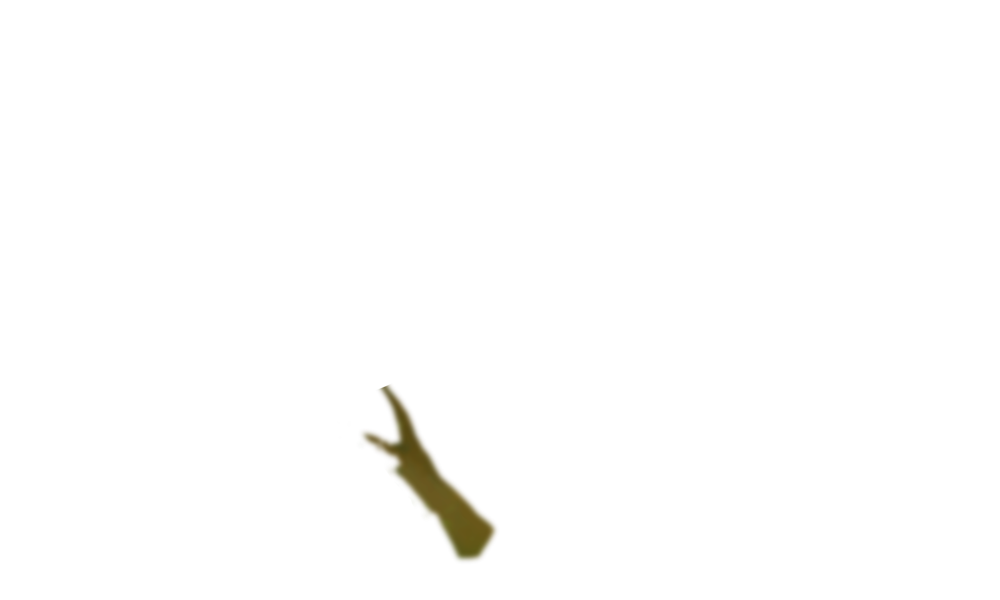
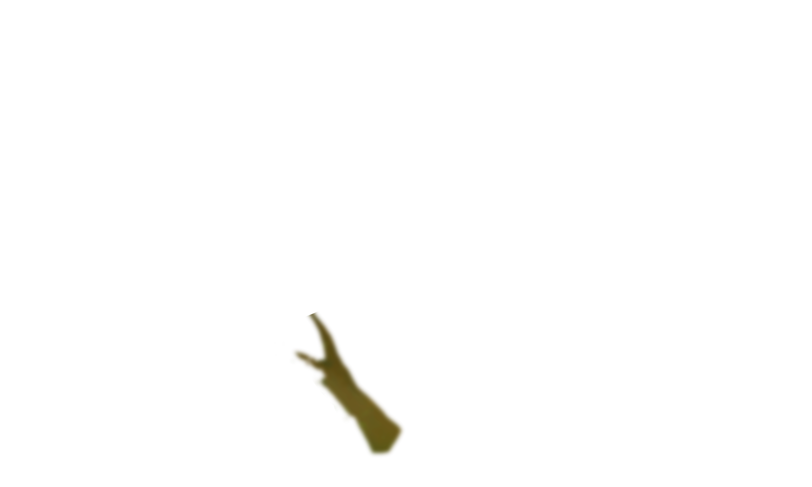
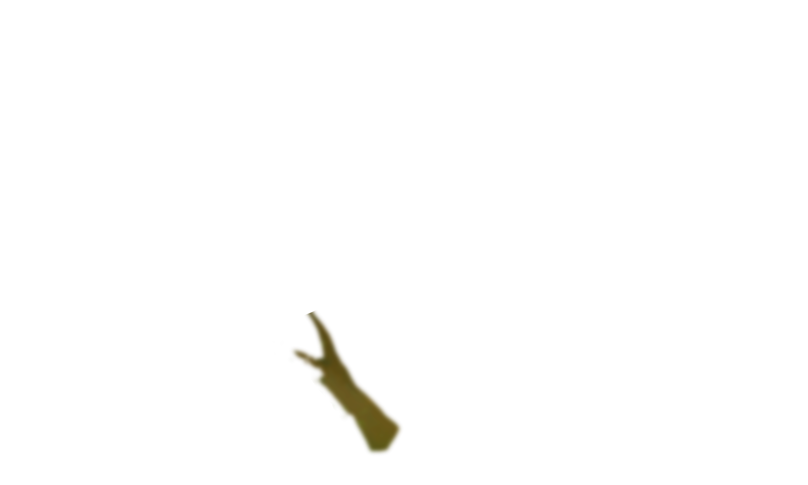
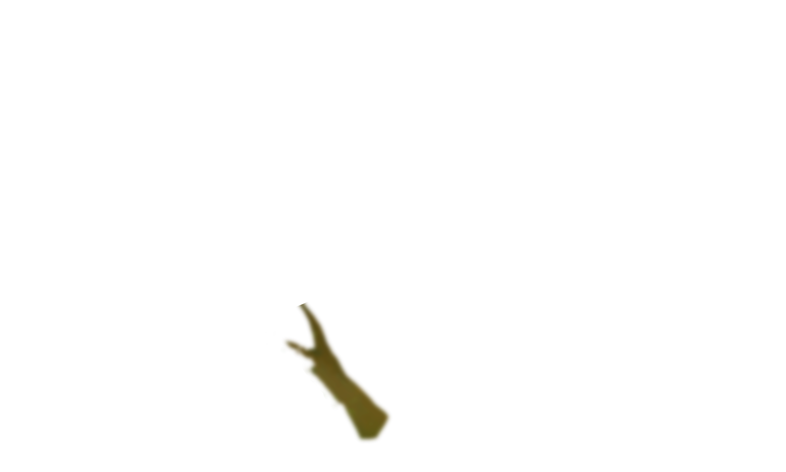
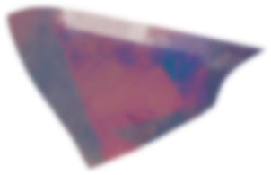
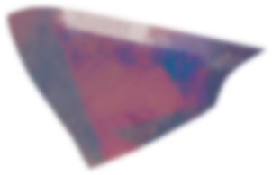

Художник по играм часто является универсальным аниматором или 3D-моделистом, который создает как 2D-, так и 3D-изображения для видеоигр. Работая над кратким описанием дизайна и концепт-артом, игровые художники воплощают сценарий из раскадровки, чтобы заполнить мир игры.
Они работают со всеми визуальными элементами, необходимыми для создания игры, включая персонажей, объекты, текстуры, активы, окружение, реквизит, транспортные средства, оружие и т. д.
Ценность такого работника очевидна - без него не существовало бы игр и фильмов с захватывающей графикой, ведь именно она создает ту самую «атмосферу игры» и предопределяет ее популярность, обеспечивая или не обеспечивая успешные продажи. Но все же, чем занимется Game Artist?
 



|
— это человек, создающий обложку игры — это строитель художественной стоставляющей игры — это тот, кто наполнит сухой программный код красками — это человек, который в ответе за то, что будет радовать ваш глаз |
Умение работать с графическими редакторами
Это является основным и самым главным навыком, потому как именно от умения работать в таких графических редакторах как Photoshop и ZBrush зависит ваше трудоустройство. Если вы владеете не только умением работать с 3D, но и с 2D, а также умеете анимировать созданне вами элементы, то это даст вам огромное преимущество перед конкурентами.
Креативность
Этот навык скорее множно назвать талантом, но при должном желании креативность можно развить. Умение создавать что-то оригинальное и фантастическое завоюет вам место под солнцем на поле художественного оформления игр, ведь сейчас, когда, казалось бы, все, что можно было придумать, уже сделано, невероятно высоко будут цениться идеи, которые не имеют аналогов.
Страсть к играм
В последнее время во многих резюме при приеме на работу очень ценится строка, в которой говорится о любви к играм. Если игру будут делать люди, которые совершенно не понимают, что они делают, то что же это будет за игра? Этим можно объяснить некоторые провальные проекты такой крупной игровой компании как Ubisoft, в которой работают люди, которые не любят игры, зато очень любят деньги.
Портфолио
Без красочного, стилизованного портфолио с работами профессионального уровня вас вряд ли возьмут в крупную компанию. Если быть точным, то без портфолио вас вообще никуда не возьмут. Портфолио - это ваше лицо, которое должно показывать и то, что вы умеете, и то, чем вы увлекаетесь, и то, что хотели бы делать. Так же в портфолио должны быть только ваши самые лучшие работы, потому иногда лучше посидеть месяц-другой над портфолио, чем отправить сырой неукомплектованный материл работодателю и получить отказ.
Первым шагом к трудоустройству является создание собственного портфолио.
С моим портфолио меня никуда не возьмут.
Сложность тудоустройства
В данной сфере сейчас очень высокая конкуренция, и сложность состоит в том, чтобы стать тем профессионалом, который будет нужен каждой компании, быть уникальным.
Неоправданнось ожиданий
На старте работы вам конечно же не дадут создавать модели главных перонажей и масштабные локации. Повезет, если вам поручат создать шнурки на ботинках второстепенного персонажа, а не камень, или, например, бочку. Нужно зарекомендовать себя в компании, чтобы вам доверили сложную задачу.
Вред зрению
Все мы знаем, что если долго сидеть за экраном монитора, то можно быстро испорить себе зрение, но для художника от этого будет зависеть его зароботок, поэтому не следует пренебрегать зарядкой для глаз, а так же дорогим монитором с защитой для зрения.